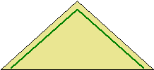
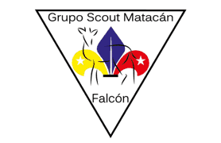

Grupo Matacán
Volver | Distrito Paraguaná - Región Falcón |
Ubicación y Contactos
Dirección: Universidad del Zulia - Núcleo Punto Fijo, Prolongación Av. Táchira. Punto Fijo
Municipio: Carirubana
Estado: Falcón
Día y hora de reuniones: Sabados de 9:00 a 11:30 am
Jefe de Grupo: Yris Humbria
Teléfonos: 0269-2462407 / 0426-8694117 / 0416-3634405
Dirección de Correos: matacan@scoutsfalcon.org
Institución Patrocinadora: Megadesechables
La Universidad del Zulia - Núcleo Punto Fijo
 
Fundado el 01 de noviembre de 1997
Significado de los colores del Grupo: El Caqui simboliza la tierra Paraguanera; el Verde la vegetación xerófita de la región. La insignia en la parte de atrás de la pañoleta es la Flor de Lis Nacional en amarillo, azul y rojo. En el pétalo amarillo hay una estrella en el borde, que significa que el Scout se guía por las estrella, en el azul hay una línea recta blanca cuyo significado es la vida recta de un Scout y en el rojo encontramos otra estrella que simbolizan los 10 artículos de la Ley Scout. En el centro de la flor de Lis, de manera pespunteada hay un Venado Matacán de color negro que simboliza su peligro de extinción. Todo esto se encuentra dentro de un triángulo.